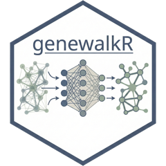

Deduplicate edges
dedup_edges.RdCollapses duplicate edges into one. The constrained PageRank keeps parallel
edges, so a pair listed twice (e.g. the same gene pair from two interaction
sources, or A-B plus B-A in an undirected graph) gets twice the
transition weight. Run this before DiffusionProfiles() unless that is
what you want.
Usage
dedup_edges(
graph_dt,
node_dt = NULL,
directed = FALSE,
weight_agg = c("max", "sum", "mean"),
.verbose = TRUE
)Arguments
- graph_dt
data.table. The edge table with
"from","to"and optionally"weight"(non-negative).- node_dt
Optional data.table with the columns
"id"and"type". If supplied, the removed duplicates are reported per node-type pair.- directed
Boolean. If
FALSE,A-BandB-Aare the same edge. Defaults toFALSE.- weight_agg
String. How to combine the weights of duplicates. One of
c("max", "sum", "mean"). Ignored without a"weight"column. Defaults to"max", matching the deduplication innode2vec().- .verbose
Boolean. Controls verbosity. Defaults to
TRUE.